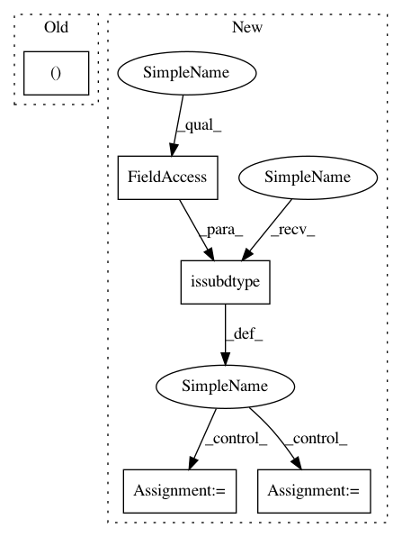

ceb4e40c074d2f0d0bde8e97c7b4493971281a9b,nussl/core/augmentation.py,,time_stretch,#Any#Any#,80
Before Change
audio_data = signal.audio_data
for row in range(audio_data.shape[0]):
audio_row = audio_data[row, :]
if librosa.__version__ > "0.6.2":
audio_row = np.asfortranarray(audio_row)
stretched_source.append(librosa.effects.time_stretch(audio_row, stretch_factor))
After Change
Returns:
stretched_signal: A copy of the original audio_signal, with augmented sources.
if not np.issubdtype(type(stretch_factor), np.number) or stretch_factor <= 0:
raise ValueError("stretch_factor must be a positve scalar")
sample_rate = audio_signal.sample_rate
stretched_audio_data = []
audio_data = audio_signal.audio_data
for audio_row in audio_signal.get_channels():
stretched_audio_data.append(librosa.effects.time_stretch(audio_row, stretch_factor))
stretched_audio_data = np.array(stretched_audio_data)
stretched_signal = audio_signal.make_copy_with_audio_data(stretched_audio_data)
stretched_signal.stft()
return stretched_signal
In pattern: SUPERPATTERN
Frequency: 3
Non-data size: 5
Instances
Project Name: interactiveaudiolab/nussl
Commit Name: ceb4e40c074d2f0d0bde8e97c7b4493971281a9b
Time: 2020-05-14
Author: abugler@gmail.com
File Name: nussl/core/augmentation.py
Class Name:
Method Name: time_stretch
Project Name: scipy/scipy
Commit Name: 27923d625d174c1b231c1f9e2de9a8bcb1375b03
Time: 2013-06-19
Author: blake.a.griffith@gmail.com
File Name: scipy/sparse/base.py
Class Name: spmatrix
Method Name: sum
Project Name: interactiveaudiolab/nussl
Commit Name: 889a295c5c4e0c1cf344e49f2020917a410f64d1
Time: 2020-05-03
Author: abugler@gmail.com
File Name: nussl/core/augmentation.py
Class Name:
Method Name: time_stretch
Project Name: interactiveaudiolab/nussl
Commit Name: ceb4e40c074d2f0d0bde8e97c7b4493971281a9b
Time: 2020-05-14
Author: abugler@gmail.com
File Name: nussl/core/augmentation.py
Class Name:
Method Name: time_stretch